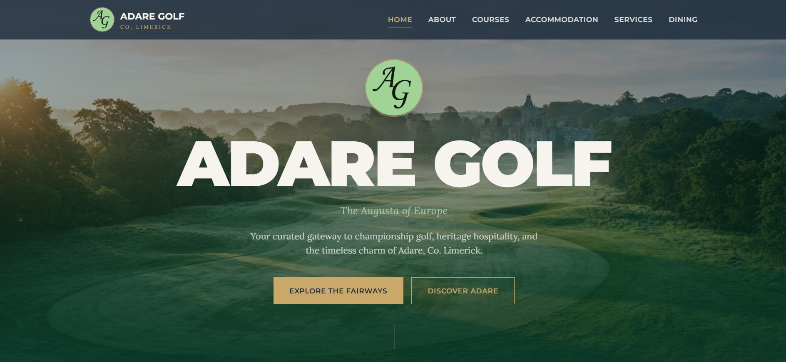

Helping businesses build stronger online presences through digital marketing, web design, graphic design, website management, and user-focused digital experiences.
Explore ServicesDigital marketing support including campaign planning, content strategy, performance reporting, and online growth initiatives.
Modern, responsive websites designed around usability, accessibility, performance, and business goals.
User-centred design focused on improving usability, accessibility, navigation, and customer journeys.
Creation of branding assets, social media graphics, digital advertisements, website visuals, and marketing materials.

Adare Golf is a tourism information website created for golfers planning a visit to Adare, Co. Limerick.
The platform showcases local golf courses, accommodation, restaurants, attractions, and visitor information in a clean, user-friendly format.
Services delivered included website design and development, search engine optimisation, graphic design, content creation, accessibility improvements, user experience design, and ongoing website management.
Experience supporting paid media campaigns, performance reporting, and content strategy.
Combining digital marketing knowledge with Experience Design principles to create effective online experiences.
Balancing creativity, design thinking, and analytical insights to achieve business objectives.
Working across WordPress, HTML, CSS, accessibility, and website optimisation.
Looking for support with digital marketing, web design, graphic design, website management, or user experience improvements?
mark.shiels717@gmail.com
085 133 5002